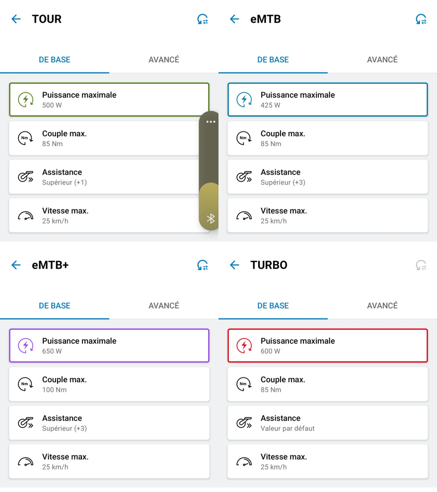

PARCOURS PRÉVISIONNEL
Charger le GPX préparé dans Komoot
La V2.5 estime ce que Bosch Flow devrait mesurer après la sortie : distance, D+, répartition TOUR / eMTB / eMTB+ et consommation batterie.
Calibration V2.5 prévisionnelle : GPX Komoot → comparaison avec sorties Bosch Flow réelles. Les valeurs internes sont celles retenues après Metz et Roupeldange.
Aucun parcours chargé
Choisis le fichier .gpx exporté de Komoot avant la sortie.
FICHIER CHARGÉ
—
Le calcul produit toujours deux scénarios distincts : sans recharge et avec recharge au kilomètre permettant de refaire le plein à 100 %.
CALIBRATION BOSCH V2.5
Paramètres du moteur prévisionnel
Batterie
Référence actuelle : Bosch PowerTube 800 Wh.
Couleurs batterie : vert > 20 %, jaune 10–20 %, rouge < 10 %.
Couleurs batterie : vert > 20 %, jaune 10–20 %, rouge < 10 %.
Profil GPX Komoot
Modes d’assistance
Recharge
Pause déjeuner de référence : 1 h 30 ≈ +200 Wh.
Le simulateur conseille donc de faire le plein dès qu’environ 200 Wh ont été consommés. Le km est calculé automatiquement pour que la pause puisse ramener la batterie à 100 %.
Le simulateur conseille donc de faire le plein dès qu’environ 200 Wh ont été consommés. Le km est calculé automatiquement pour que la pause puisse ramener la batterie à 100 %.
RÉGLAGES EBIKE FLOW
Réglages Bosch de référence
Important : ces valeurs rappellent la configuration eBike Flow utilisée pour la calibration.
Une modification de ces réglages dans eBike Flow n'est pas prise en compte automatiquement par le recalcul.
Le simulateur continue d'utiliser la calibration prévisionnelle V2.5 validée à partir des sorties réelles.
TOURréférence Flow
500 W
Couple max 85 NmVitesse max 25 km/hAssistance Supérieur (+1)
eMTBréférence Flow
425 W
Couple max 85 NmVitesse max 25 km/hAssistance Supérieur (+3)
eMTB+référence Flow
650 W
Couple max 100 NmVitesse max 25 km/hAssistance Supérieur (+3)
Turboréférence Flow
600 W
Couple max 85 NmVitesse max 25 km/hAssistance Valeur par défaut
Voir la capture eBike Flow de référence

Pas encore de résultat
Charge d’abord un GPX Komoot dans l’onglet GPX Komoot.
PRÉVISION BOSCH FLOW
—
Bosch V2 · Komoot → Flow
LECTURE DU MODÈLE
Ce que la V2 prédit avant la sortie
1
RÉSULTAT 1
Sans recharge
GRAPHIQUE 1
Parcours complet sans recharge
D+TOUReMTBeMTB+
Batterie :> 20 %10–20 %< 10 %
2
RÉSULTAT 2
Avec recharge déjeuner jusqu’au plein
GRAPHIQUE 2
Parcours complet avec plein déjeuner à 100 %
D+TOUReMTBeMTB+
Batterie :> 20 %10–20 %< 10 %Recharge
DÉTAIL PRÉVISIONNEL
Tronçons de 1 km
| N° | Km début | Km fin | Dist. | D+ prévu | Pente + | Mode | Conso | Cumul | Restant sans recharge | Restant avec recharge |
|---|